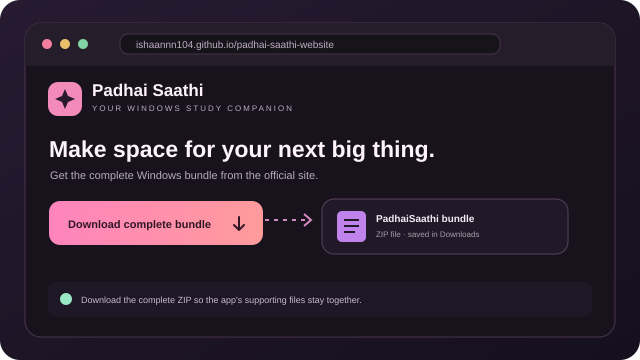
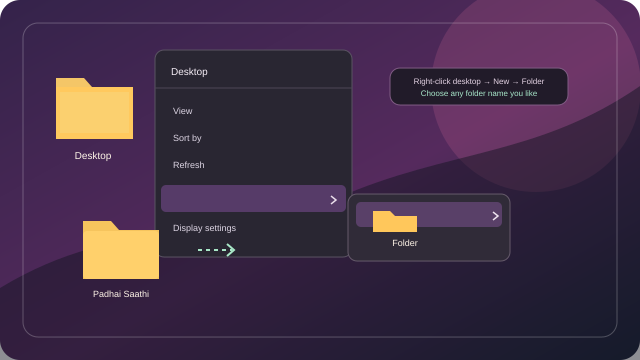
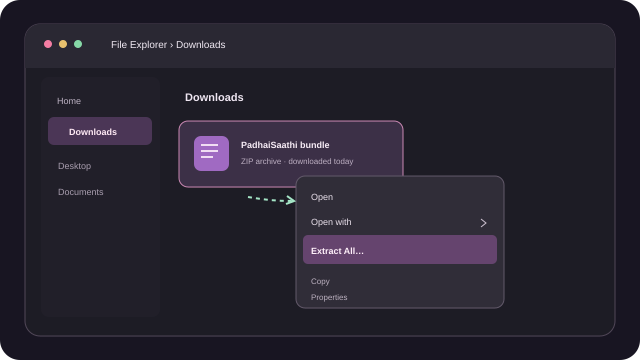
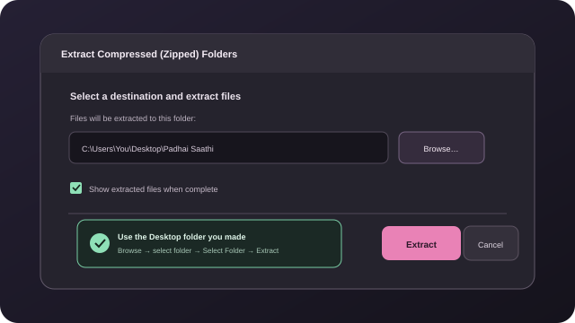
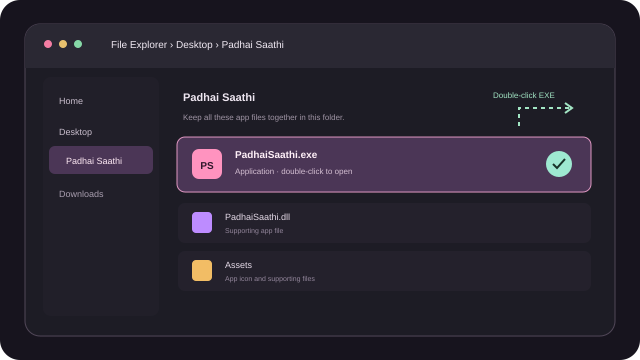
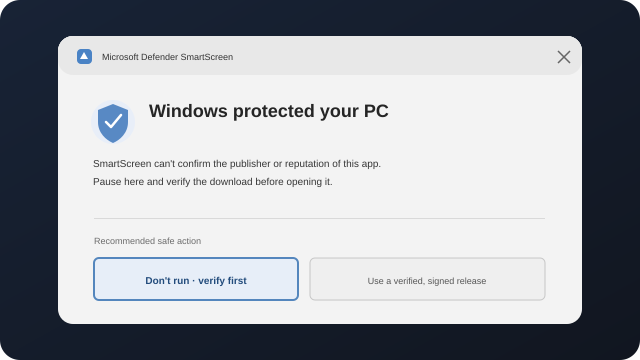

FIND YOUR RHYTHM
Focus your way.
Pick Pomodoro, countdown, stopwatch, deep work, intervals or your own custom cycle. Save your preferred setup and get started.
Explore focus modes ↗A calmer desktop for getting into flow. Plan the session, quiet the distractions, and keep your study day moving—all from one place.
Keep the small things from pulling you away from the important thing in front of you.
Pick Pomodoro, countdown, stopwatch, deep work, intervals or your own custom cycle. Save your preferred setup and get started.
Explore focus modes ↗Choose apps and website domains separately. When a blocked website opens, Padhai Saathi closes the whole browser and its other tabs and windows.
Set the days and hours for a workspace. Padhai Saathi can open your study links and keep the routine ready for you.
See how workspaces work ↗Break big goals into tasks with estimates, priorities and due dates. Plan your day around the time you actually have.
Play your own audio with playback, volume, shuffle, repeat and track controls that stay available around the app.
Review focused time, streaks and subject totals. Export your progress and view a private activity log protected by your PIN.
Stuck on a difficult concept or exam question? Ask Saathi AI for instant step-by-step explanations, mnemonic tricks, and quick revision notes powered by Google Gemini.
Turn study sessions into rewarding milestones. Rank up from Focus Novice to Padhai Prodigy, earn daily streaks, and get daily motivational quotes to keep your mental flow peak.
Add the channels you learn from with a channel URL or @handle. During focus sessions and active workspaces, those channel pages and videos stay available; other YouTube pages and videos close the whole browser.
Video channels are checked online on first use. A new page may load briefly before the blocker check closes the browser; if a channel cannot be verified, access is denied.Some days call for sprints. Some call for a long, quiet stretch. Select a mode to preview its timer above; the demo does not start or control the desktop app.
See the focus room ↗Turn a big study day into a few clear next steps. Add tasks, keep an eye on your remaining focus time, and save a copy when you're done.
No tasks yet. Add one small step to get started.
Choose a focus mode, set today's priority and decide how long you want to work.
Turn on your blockers and let your scheduled workspace open the sites you need.
Take a planned break, finish a task and see the time you've put in.
Choose weekdays, set a time window and add the study websites you want ready. If a workspace tab gets closed, the app checks and reopens it while the schedule is active.
Study sessions and activity history are stored locally on your PC. Set a PIN for protected controls and your activity log.
A few quick answers about how Padhai Saathi works.
During an active focus session or scheduled workspace, Padhai Saathi matches the blocked domain and closes the entire browser process, including its other windows and tabs. Save browser work before a session, because unsaved forms may be lost.
Yes. Add selected channel URLs or @handles in Blockers and turn on the YouTube channel limit. During focus and active workspaces, those channel pages and videos are allowed; other YouTube pages and videos close the whole browser. Video channels need an internet check the first time.
Selected apps are force-closed during focus or an enabled workspace. Save your work before starting a protected session, because unsaved changes in a blocked app may be lost.
Yes. The player supports common local audio files, including MP3, WAV, WMA, M4A and AAC. Add audio you have the right to use.
Your study and activity data is stored locally on your Windows PC. You can export progress reports from the app.
The app saves the timer's end time and can restore it after you sign back into Windows. The app itself cannot run while Windows is powered off.
No. This is an informational website about the Windows app. It has no checkout, payment form, account sign-in, or password collection.
Use the complete bundle so the app and its supporting files stay together. These illustrations show where each step happens in Windows.

On this website, click Download complete bundle. Save the ZIP file when your browser asks.

Right-click the Desktop, choose New → Folder, then give it any name you like, such as “Padhai Saathi”.

Open Downloads, right-click the Padhai Saathi ZIP, and choose Extract All….

In the extraction window, click Browse…, select the Desktop folder you made, choose Select Folder, then click Extract.

Open your new folder and double-click PadhaiSaathi.exe. Keep the other app files in the same folder.

If SmartScreen cannot verify the publisher, choose Don’t run. Verify the source and use a signed, trusted release before opening the app.
If Windows says a runtime is missing, install the official .NET 10 Desktop Runtime from Microsoft.
Choose the complete Windows bundle for an easy setup, or download the EXE launcher directly.
Includes single-file PadhaiSaathi.exe with AI Doubt Solver & Gamification. Extract the ZIP and run.
Download User Bundle ZIP · 71 MB · Windows 10/11, 64-bit · Self-containedDownload the single-file executable directly. Self-contained, zero-install, ready to run.
Download EXE EXE · 76 MB · Windows 10/11, 64-bitParental control console and remote focus monitoring are provided directly to parents on request.
Request Parent Access Direct Parent Verification · Message to Obtain SetupThe clean bundle does not include music, session history, streaks, profiles or backups. Install the .NET 10 Desktop Runtime if it is not already on your PC.
Meet the study space built to help you come back to what matters.
Download Padhai Saathi ↓Windows desktop app · Free preview download